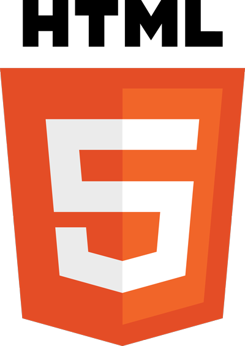

Olá! Sou Hugo Lélio
seja bem-vindo(a) ao meu currículo digital.
Busco novos desafios como dev, meu objetivo é evoluir a cada dia meu nível de programação estudando e aprendendo e praticando bastante.
< /objetivos >WebDesigner desde de 2005, estudo programação com javascript e typescript desde 2019 com o objetivo de desenvolver projetos pessoais e retornar ao mercado de trabalho na área.
< /trajetória >- 


Marketing a concluir.
< /formação >Desenho, fotografia, artesanato, cozinhar, correr
< /hobbies >- Empresa: Microlins - 2005 - 2011
- Cargo: Professor
- Cursos: Webdesign e Design Gráfico
- Local/Sede: Bezerra de Menezes
- Local/Sede: Mesejana
- Local/Sede: Centro
- Local/Sede: Aldeota
- Local/Sede: Conjunto Ceará
- --------------------------------
- Empresa: Techmit - 2007 - 2011
- Cargo: Webdesigner e Designer Gráfico
- Local/Sede: São Gerardo
- --------------------------------
- Empresa: Noix internet - 2011 - 2012
- Cargo: Webdesigner
- Local/Sede: Papicu
- --------------------------------
- Empresa: AVANZ - 2012 - 2014
- Cargo: Webdesigner e Diretor de Arte
- Local/Sede: Aldeota
- --------------------------------
- Empresa: Techmit - 2014 - 2018
- Cargo: Sócio sênior
- Local/Sede: São Gerardo
- --------------------------------
Já participei de muitos projetos porém o meu projeto mais atual é um projeto pessoal, desenhei ele do zero, o objetivo era criar páginas criativas para capturar leads interessados em planos de saúde, hoje ele gera cerca de 10 leads ao dia. visite https://fortalezaplanodesaude.com/
- Responsável por:
- - Layout
- - Desenvolvimento do site
- - Seo
- - Estratégias de divulgação SEM
- Endereço: Av. Bernardo Manuel, 13110
- Local: Brasil - Ceará - Fortaleza
- Cep: 60.760-000
- Contato: / +55 85 996 434 504
- GitHub: @hugolrjdev
- Linkedin: @hugolrj
- Behance: @hugolrj